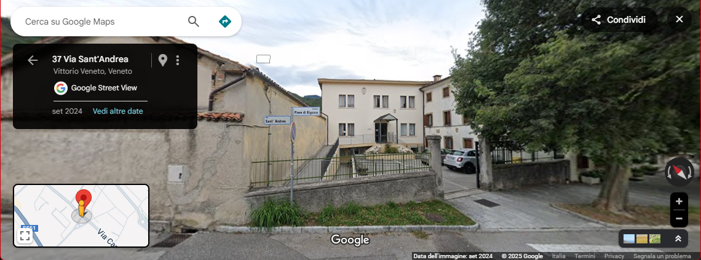

Dove siamo
ARCS-VV Associazione Rete di Cittadinanza Solidale
Via Sant'Andrea, 37
(dietro la chiesa, di fronte al campetto da pallacanestro)
31029 Vittorio Veneto (TV)
Italia
Orario:
Mercoledì e Giovedì: 15:45 - 18:15

Visualizza su Google Maps